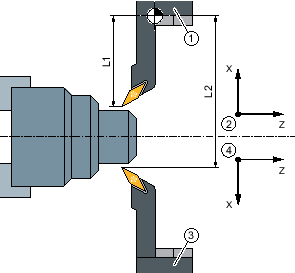

Sie programmieren immer im Grundkoordinatensystem (WKS des ersten Werkzeugträgers). Sie müssen dabei nicht berücksichtigen, auf welchem Werkzeugträger das Werkzeug liegt.
Bei der Anwahl eines Werkzeuges auf dem zweiten Werkzeugträger werden jeweils eine Spiegelung der X- und Y-Achse sowie eine Verschiebung (Drehung) der Haupt- und Gegenspindel um 180° vorgenommen.
① | Werkzeugträger 1 |
② | Werkstückkoordinatensystem bei Verwendung des ersten Werkzeugträgers |
③ | Werkzeugträger 2 |
④ | Werkstückkoordinatensystem bei Verwendung des zweiten Werkzeugträgers |
Bei der Simulation wird das Werkzeug immer auf der richtigen Seite, wie es an der Maschine verwendet wird, angezeigt.
Die programmierte C-Verschiebung um 180° wirkt nur auf C-Achsen, nicht auf Spindeln.
Es ist nicht möglich, einen Gewindegang mit Werkzeugen zu fertigen, die auf beide Werkzeugträger verteilt sind.
Bei der G-Code Programmierung müssen folgende Punkte beachtet werden:
Nach einem Werkzeugwechsel wird automatisch eine Spiegelung der Werkzeuge auf dem zweiten Werkzeugträger aktiv.
Bei der Programmierung eines TRANSMIT-Befehls wird automatisch eine Spiegelung der Werkzeuge auf dem zweiten Werkzeugträger aktiv.